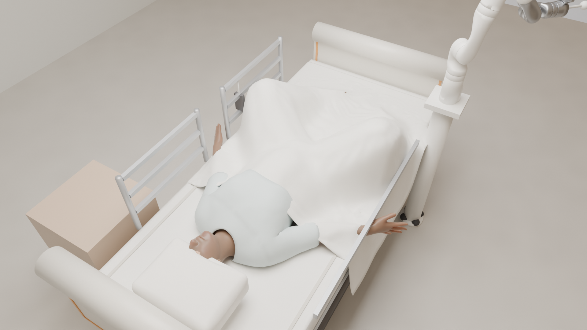
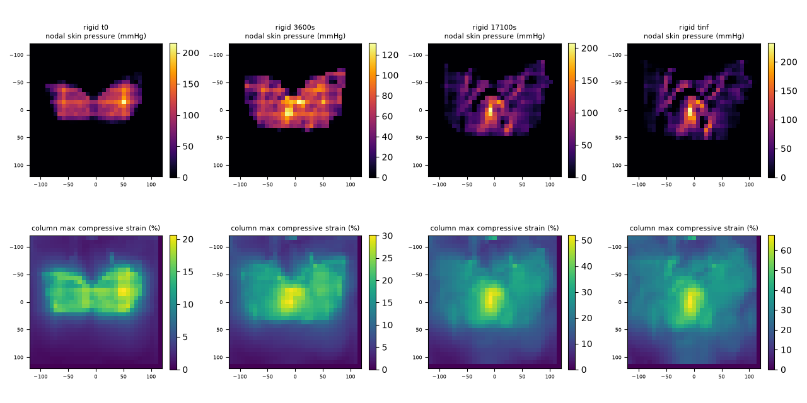
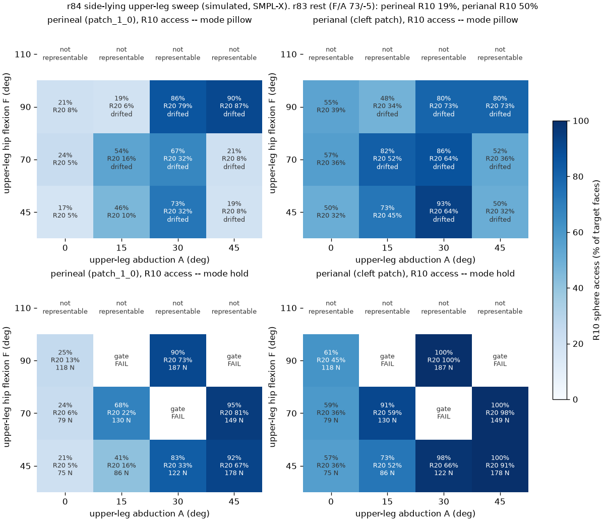

Work in progress · platform v2 · September 2026
Measuring whether a care robot hurts the patient
A physics simulation of robot-assisted diaper changing and perineal cleaning, built to answer a question the existing caregiving simulators do not ask: not can the robot finish the task, but what does it do to the body while trying.
Mu-Hua Wang · independent
This page describes an ongoing build. Every number is a simulation result on a statistical body model, traceable to a round report and its stored output files; none has been validated against measurements on people.
The scene (5 s, no sound). The patient is a physically settled body on a pressure-sensing mattress; the robot is parked. Rendered from the simulation state, not animated by hand. Patient realism (arm and head resting positions) is being refined; see In progress.
Every run is scored on the same three axes
Is the garment on?
Coverage, leg-opening gap, waistband gap, tab and band tension, slip after release, cloth-on-skin pressure. The cloth collides with the patient’s true posed skin.
Is the perineum cleaned?
Tool reachability on the true skin, the robot arm chain (IK, transfer, wipe), and the wiped-area fraction of each target region under a pre-registered pressure band.
Is the patient injured?
Bed reaction, interface pressure on a sensor grid, caregiver hand forces, and deep-tissue compressive strain from a converged soft-tissue model of the sacral region.
A settled patient in clinical care positions
The patient is an SMPL-X body driven by MuJoCo, with real MyoSkeleton pelvis, sacrum and femur meshes registered under the skin (hip-centre residual 10.4 mm) and passive joint mechanics after Riener & Edrich 1999. Every care position is settled physically and must pass gates before it is used: pose drift under 0.05° in the final second, support reaction equal to body weight within 2 %, and pelvis roll under 5° for supine.
| Position | Pelvis | Support | Notes |
|---|---|---|---|
| True supine, legs extended | roll 1.0–2.9° | 99.9 % | Left/right buttock load within 1.5 %; sacral footprint 125.9 N |
| Side-lying (perineal care) | 90.0° lateral | 100.3 % | Two bolsters, arm by the head; drift 0.011° / 0.088 mm |
| Supine frog-leg | roll < 3° | 100.0 % | Knees held (69 / 90 N); knees ±330 mm apart |

Side-lying, rendered from the settled physics state (gown and blanket draped).

Supine frog-leg, the clinical position for perineal care, seen from above.
Interface pressure alone does not tell you about deep-tissue risk
The sacral soft-tissue model has real bone on the deep side, a flat bed against the skin, a tensor viscoelastic law, and locking-free F-bar elements solved by a static Newton method. The solver reproduces closed-form compression tests to 1.8×10−5, its gradients match finite differences to 10−11, and the strain fields are converged across three mesh densities and against a 37-step time control. Contact with a compliant foam mattress is verified: a very stiff foam reproduces the rigid bed within 1.6 %.
| After 285 min supine | Rigid bed | 30 kPa foam | 15 kPa foam |
|---|---|---|---|
| Peak compressive strain (1 cm³ average) | 48.7 % | 40.2 % | 33.9 % |
| Tissue above the 40 % level | 69 cm³ | 4 cm³ | 1.3 cm³ |
| Skin pressure, 38 mm window | 47 mmHg | 40 mmHg | 34 mmHg |
| Where the peak sits | Muscle, 23–30 mm deep, about 3 cm above bone — the same site on all three beds | ||
skin pressure, rigid → 30 kPa foam
47 to 40 mmHg.
tissue above the 285-min strain level
69 to 4 cm³ on the same change of mattress.
above bone, in muscle
The robust strain peak sits at the same deep site on all three beds.

Skin pressure (top) and deep compressive strain (bottom) at 0, 1 h, 285 min and long-term on the rigid bed. Over time the two move in opposite directions: skin pressure spreads and fades while deep strain concentrates. This matches the direction of the Gefen/Oomens deep-tissue-injury literature.
Strain levels follow Gefen 2008 (40 % at 285 min, 65 % at 1 h, in-vitro constructs); the cleaning band follows Konya 2023 (10–20 mmHg). Every threshold on this page was checked against its primary source in a citation audit. Foam stiffnesses are bracketed values pending published hospital-mattress data.
Positioning opens the perineum; the robot reaches it on the true skin
reachable, supine, legs abducted 30°
All three perineal target regions, 20 mm and 10 mm tools. Frog-leg with knees held: 95 %.
reachable, side-lying, upper leg raised 30°
Holding the leg takes 122 N, about the weight of the leg. Raising it 45° gives 92–95 %.
legal robot bases reach all four targets
Approach and transfer complete with peak contact force ≤ 2.8 N and no skin penetration.
wiped-area fraction, main perineal region
Compliant cloth pad, patch-mean pressure 13–15 mmHg, ≥ 3 passes; criterion fixed before the run.

Side-lying access map. 10 mm tool access to the perineal (left) and perianal (right) targets versus upper-leg flexion and abduction, with the leg on a pillow (top) or held by the caregiver (bottom). Abduction, not flexion, opens the slot between the thighs.
Wiping is simulated against the soft-tissue model’s own skin surface with a compliant cloth pad at hand-and-cloth scale (about 1.2 N). With a tilting approach cone, 16 of 17 planned strokes execute within the platform’s safety rules: no false body contact and no force spike above 20 N.
A closed brief around a settled patient
The blocker for the garment axis was that the cloth collided with a coarse body shell rather than the skin. The platform now tiles the posed skin with thin convex prisms, one per skin face and one body each. Verified on flat and curved patches: the cloth rests at exactly its radius (4.00 mm), a cloth sandwiched between skin and mattress carries the full sacral load within 1 %, the tiles match the skin with zero holes, and every contact pair stays under MuJoCo’s limit.
Closing the brief (supine frog-leg)
- Front panel pulled up between the legs: stretch 1.24×, no skin penetration.
- All four side-wing tabs fastened from a path planned on the live front panel; the wings lie over the front panel with 0 layer crossings.
- Holds after release; sacral load with the cloth under the body within 1 % of the value without it.
- Leg-opening gap p95 4.3 mm; back waist gap 2.0 mm.
Cloth physics verified
- Elastic leg cuffs and waistband by pre-strain: ring test matches the hoop-stress prediction within 1 %.
- Cloth self-collision: a folded sheet keeps 7.5 mm layer separation, zero crossings.
- Stress-free flat pattern: a free brief keeps its length exactly over 2 s.
- Seams carry 97–98 % of force with gaps ≤ 0.7 mm.
No published simulator asks this question
A structured literature search (September 2026) found no published simulation platform in which a manipulator performs perineal cleaning or diaper changing on a statistical human body while measuring garment state, cleaning coverage and tissue injury separately. The nearest neighbours cover supine care with regional deformable shells but no pelvis, mattress or tissue strain, or seated bathing and scratching without the pelvic region. Twelve of the platform’s numerical thresholds were audited against their primary sources; the values on this page are the audited ones.
In progress
Patient realism
Natural resting arm and head positions (a pillow as a scene fixture; hands resting on the abdomen), re-rendering the visual set from the settled positions, skin textures for the face.
Garment materials and layering
Signed-clearance wing paths and measured fastener stiffness; nonwoven and elastic parameters from published diaper data; fit criteria from industry leakage tests.
Mattress parameters
Replacing the bracketed foam stiffness with published hospital-mattress data and rerunning the 285-minute comparison on it.
Cleaning coverage
Extending pad strokes to every target region and the perianal cleft; softer pad and higher-friction variants.